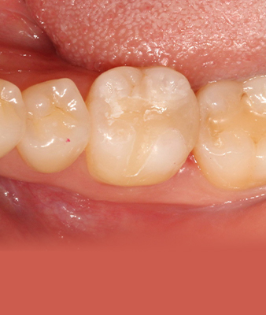

충치치료
충치는 구강내 세균에 의해 치아가 부식되어 가는 과정으로
발생한 위치와 면적, 깊이에 따라
치료 방법 및 수복물의 재료가 달라집니다.
충치치료의 종류
충치가 작다면 레진부터
크다면 발치 및 임플란트까지
치료가 진행됩니다.
Nowon Yonseirian Dental Clinic
레진
Resin
충치를 제거한 자리에 강화 플라스틱인 레진을 이용하여 메꾸는 방법입니다.
표면에 국한된 마모, 깊지 않은 충치에 적용합니다.
치료 전후
Before
After
Before
After
Nowon Yonseirian Dental Clinic
인레이와 온레이
In-lay & On-lay
'in / on- lay' 순으로 충치를 제거하고 치아를 덮는 면적이 넓어지는 것을 뜻합니다.
세라믹과 골드 등의 재료가 있으며 골드는 강도가 좋으나 비심미성과 치아 파절의 가능성 때문에 현재는 심미성 및 강도가 우수한 세라믹 재료를 많이 사용합니다.
치료 과정
01충치 확인
02충치 제거 및 치아 형성
03보철물 제작

04치아에 섬세하게 접착
치료 전후
Before
After

After
Nowon Yonseirian Dental Clinic
크라운
Crown
충치 및 파절로 인한 손상도가 치아의 50% 이상인 경우 및 신경 치료를 한 경우 치아를 보호해주기 위해 완전히 감싸는 방식입니다.
종류로는 지르코니아, 골드, PFM 등의 재료가 있으며 환자분의 상태에 맞게 선택할 수 있습니다.
치료 전후
Before
After
After
After